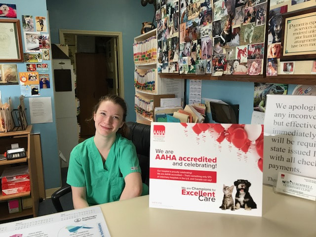
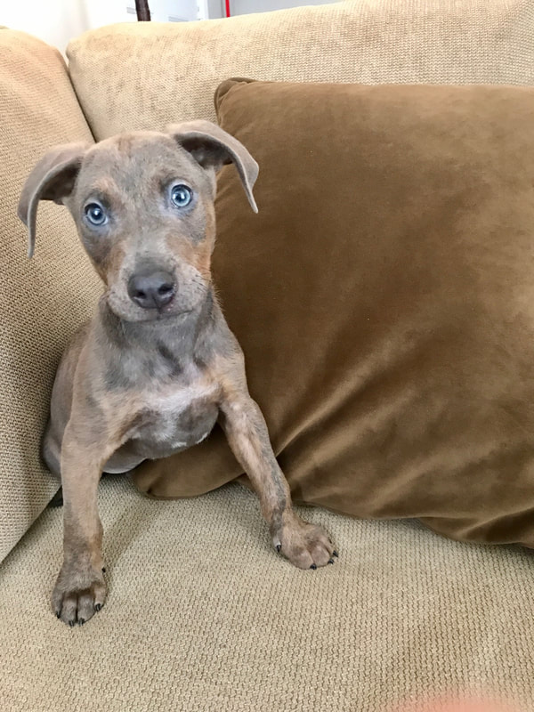

We are convenient to Roswell, Alpharetta, and Milton. Our facility provides the most up to date care for your pet including pet wellness, medical care for non-emergency and emergency problems, routine and comprehensive surgeries, dentals, and behavioral counseling. In addition, North Roswell Veterinary Clinic has a boarding facility to care for your pets when you are unable to do so. We have the ability to help your pet in most any of his or her medical needs.

We pride ourselves in offering a comfortable, family atmosphere for both you and your loved one. This in part is made possible by our team of veterinarians Dr. David Shepherd and Dr. Jannice Laketa. Both are graduates of Auburn University. In addition, they routinely participate in continuing education so that we may provide the most up to date and thorough care for your pet. Dr. Shepherd is certified for the use of stem cells for the treatment of joint disease. He is excited to use this new and upcoming medicine for the betterment of your pet. Dr. Shepherd is experienced in repairing ACL (cruciate ligament) tears. Knee repairs and orthopedic surgeries are a special interest of his. Dr. Laketa we affectionately call our "cat whisperer." She enjoys working with both dogs and cats but has not met a cat yet that she could not handle. She has a particular interest in feline medicine and has that special touch some cats need. Dr. Laketa devotes her time to learning all about the improvements in veterinary pain management.
| Hours | Contact | |
|---|---|---|
| Monday | 7:00am - 6:00pm | Phone: 1-770-442-8733 |
| Tuesday | 7:00am - 6:00pm | Email: northroswellveterinaryclinic@gmail.com |
| Wednesday | 7:00am - 6:00pm |
|
| Thursday | 7:00am - 6:00pm | Address: |
| Friday | 7:00am - 6:00pm | 11490 Alpharetta Hwy Suite 800 |
| Saturday | 7:00am - 6:00pm | Roswell Ga 30076 |
| Sunday | Closed |